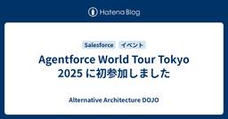
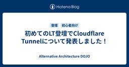
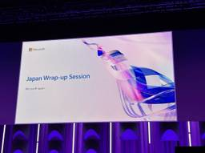
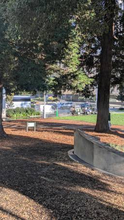
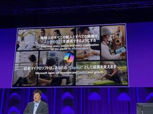
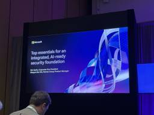

Alternative Architecture DOJO
https://aadojo.alterbooth.com/
オルターブースのクラウドネイティブ特化型ブログです。
フィード

Agentforce World Tour Tokyo 2025 に初参加しました
Alternative Architecture DOJO
こんにちは！オルターブースの中島です。 12月にさしかかり慌ただしくなってきましたね。冬支度をしながら年末年始イベントを楽しみにしています🐧 11月は Microsoft も Salesforce もイベントがありますが、今回は Agentforce World Tour Tokyo 2025 に参加しました✨ 去年も行きたいと思っていたのですが、 Microsoft Ignite の参加があり見送りましたので今年が初参加になります。 Agentforce World Tour Tokyo Agentforce とは Salesforce の AIエージェントプラットフォームのことです。 昨年…
2日前

初めてのLT登壇でCloudflare Tunnelについて発表しました！ 1
1
Alternative Architecture DOJO
みなさんこんにちは！ エンジニアの星加です。 先日、「たのしくでべろっぷめんと選手権」というイベントのLTで初登壇してきました！ 今回は、登壇した経緯と、感想のレポートをお届けしたいと思います。 まだ登壇したことが無い方、登壇してみたい方の参考になれば幸いです！ たのしくでべろっぷめんと選手権とは？ 20代の若手エンジニアを中心とし、エンジニア間のコミュニケーションを活性化することを目的とした、福岡の勉強会コミュニティです。 connpassでは次のように紹介されています。 本勉強会は、20代の若手エンジニアを中心に、登壇や聴講の敷居を下げ、エンジニア間のコミュニケーションを活性化することを目…
3日前

MS Ignite 2025 Day 4 - Japan Wrap-up Session - Ignite主要アナウンス総括
Alternative Architecture DOJO
Microsoft Ignite 2025最終日、Ignite史上初めて正式セッションとして組み込まれた日本語セッションが開催されました。Ignite主要アナウンス総括を共有いただきました。ネイティブ言語で聞けるってなんて素晴らしい・・・（しみじみ） 内容に間違いがあるかもしれません。正確な情報は下記の動画をもご参照ください。 Japan Wrap-up Session ignite.microsoft.com 主要発表まとめ Microsoft Foundry - AI開発基盤の進化 Azure AI Foundry → Microsoft Foundry: 名称変更し、Microsoft全…
5日前

【Microsoft Ignite 2025】Day4 レポート
Alternative Architecture DOJO
こんにちは！日を追うごとに脳内がルー大柴と化している横野です。人生 Mountain あり Valley あり。一寸先は Darkness 。バカも Holiday Holiday 言いなさい。 ということで最近の日課で毎日公園へ行っているのですが、今日は偶然清掃をしているところに遭遇しました。薬剤みたいなものを使ったり、大きな高圧洗浄機を使ったりでスピード感あふれる清掃でした。 【セッション】Evolving your IT career in the AI age このセッションでは、LLM や RAG の実装テクニックではなく、「AI 時代に IT キャリアをどう進化させるか」にフォーカ…
8日前

【Microsoft Ignite 2025】Day 4：AIは魔法じゃないと再確認したの巻
Alternative Architecture DOJO
Microsoft Igniteの最終日を迎えて思うことを書きました。
8日前

MS Ignite 2025 Day 3 - セキュリティとモダナイゼーションの実践
Alternative Architecture DOJO
MS Ignite 3日目は、AI時代のセキュリティ基盤構築と、アプリケーションモダナイゼーションに焦点を当てたセッションが中心でした。BreakoutセッションとPartner向けセッション、そして3つの実践的なハンズオンラボに参加。 BRK242: Top Essentials for an Integrated, AI-Ready Security Foundation BRK242 ゼロトラストの3原則をAIにも適用 明示的に検証: AIエージェントも認証必須(多くが省略している現状) 最小権限: 侵害時の影響範囲を最小化 侵害を前提: 継続的な監視が必要 MFAの現状 業務アカウント…
8日前

【Microsoft Ignite 2025】Day 3：パートナーが大集合！の巻
Alternative Architecture DOJO
Microsoft Ignite 2025、3日目の様子を書きました。
8日前
【Microsoft Ignite 2025】Day3 レポート
Alternative Architecture DOJO
こんにちは！昨日はステーキを食べたせいかお腹が痛くなり25年ぶりくらいに飲んだ正露丸の効果にびっくりしている横野です。美味しい肉は大体お腹を壊します。笑 あとは3日目にしてやっとホテルの部屋から見える景色にヤツがいることに気づきました。 【セッション】From DEV to PROD: How to build agentic memory with Azure Cosmos DB (BRK) このセッションでは、エージェントの「メモリ」を Azure Cosmos DB 上に実装・運用するための考え方と実装パターンが整理されていました。 短期／長期メモリの役割や、マルチテナント構成、ベクトル…
8日前
MS Ignite 2025 Day 2 - エージェント、ガバナンス、そしてAzure運用
Alternative Architecture DOJO
MS Ignite 2日目は、AIエージェントのガバナンスと運用管理をセッションを聞いてきました。 MOSCONE SOUTHからの風景 MOSCONE SOUTHの会場からの眺め。左がMOSCONE WEST会場、右がマリオットマーキス会場です。 Agent 365: エンタープライズ向けエージェント管理 BRK305セッション会場 BRK305セッションでは、Agent 365の3つの柱が紹介されました: 1. アイデンティティ管理 エージェントブループリントを使ってEntraで一意のアイデンティティを付与。Claude Agent SDKなど、Microsoft以外のプラットフォームで構…
9日前
【Microsoft Ignite 2025】Day2 レポート
Alternative Architecture DOJO
おはようございます！早朝に目が覚めてしまい散歩をしていたらサンフランシスコでは朝4時でもバスが走っていることにビックリした横野です。 今日も特別見たいセッション以外はなるべくサンフランシスコ現地でしか見れないセッションを中心に参加してきました。 【セッション】Identity modernization builds the foundation for AI 「Active Directory から Entra ID へのアイデンティティ・モダナイゼーション」が AI 時代の土台であることが強調されました。 オンプレ AD はスキル不足・運用負荷・攻撃対象の大きさゆえに重大インシデントの温床…
9日前
【Microsoft Ignite 2025】Day 2：Microsoft 365 Copilot低価格版が発表されたぞ！の巻
Alternative Architecture DOJO
Microsoft Igniteで発表されたMicrosoft 365 Copilotの低価格版について書きました。
10日前
MS Ignite 2025 Day 1 - チェイスセンターでのキーノートと現地体験
Alternative Architecture DOJO
いよいよMS Ignite 2025の本番、Day 1が始まりました！Day 0で事前チェックインを済ませ、チェイスセンターでのキーノートから、会場間の移動、そしてセッション体験まで、現地ならではの体験をレポートします。 チェイスセンターへ 朝6時半ごろキーノートが開催されるチェイスセンターに到着しました。キーノートの開始は9時からですが何名かの参加者がすでに到着しており、熱気を感じます。 チェイスセンターの外観 会場に入る前には、セキュリティチェックがあります。セキュリティゲートと手荷物検査を通過し、無事に会場内へ。 キーノート チェイスセンター内のキーノート会場 会場の臨場感は、オンライン…
10日前
【Microsoft Ignite 2025】Day 1：Opening Keynoteの巻
Alternative Architecture DOJO
いよいよ開幕したMicrosoft IgniteのOpening Keynoteについて書きました。
10日前
【Microsoft Ignite 2025】Day1 レポート
Alternative Architecture DOJO
入場 こんにちは！今日はいよいよ Microsoft Ignite 2025 Day1！Day1の朝は早いということで目覚ましを午前5:00にセットしたのですが、なぜか目覚ましが鳴る直前に起きてしまい少し眠たい横野です。 当日は午前6:30に Uber を予約していざ Chase Center へ！頑張って早く到着したつもりでしたが、既に並んでいる方たちもいて参加者の熱量の高さを感じました。 オープンの午前7:30までなかなか時間が経たず、寒くてがたがた震えながら待っていました。ホッカイロでも持参して隣の知らない人に配れたら仲良くなれたかな。笑 中に入るとテンション高いスタッフの方がコーヒーや…
10日前
【Microsoft Ignite 2025】Microsoft Igniteってどんなイベント？
Alternative Architecture DOJO
Microsoft Igniteとはどういうイベントなのかを簡潔に説明しています。
11日前
MS Ignite 2025 Day 0 - サンフランシスコでの事前チェックイン体験
Alternative Architecture DOJO
MS Ignite 2025に参加するため、サンフランシスコにやってきました！本格的なイベントが始まるDay 1の前日、Day 0は事前レジストレーションの日。会場周辺を散策しながら、チェックインを済ませてきたので、その様子をレポートします。 サンフランシスコ到着 サンフランシスコの街は、すでにホリデーシーズンの雰囲気に包まれていました。ユニオンスクエアには立派なクリスマスツリーが飾られいました。 ユニオンスクエアのクリスマスツリー ユニオンスクエアの前には、ニンテンドーストアあったのでもちろん立ち寄ってみました。限定グッズもありましたよ。 ニンテンドーストア Waymo自動運転タクシー体験 …
12日前
【Microsoft Ignite 2025】Day 0：バッジとswagで開幕の巻
Alternative Architecture DOJO
おはようサンフランシスコ～！！（声：ダニー・タナー） みなさん、おはようございます。木本です。 明日から始まるMicrosoft Igniteに参加するため、現在アメリカのサンフランシスコに来ています。 個人的には初の渡米であり、しかも50回目の誕生日をサンフランシスコで迎えることができ、この記念すべき日に「集合時間に起床する」の実績を解除してしまいました。（関係各位、ごめんなさい） さて、そんな楽しいサンフランシスコ（曇天ときどき雨）ですが、先ほどMicrosoft Ignite会場であるMoscone Westで受付を済ませてきました。 バッジ受け取り会場のMoscone West Mic…
12日前
Microsoft Ignite 2025 いよいよ開幕！前日レジストレーションの様子をレポート
Alternative Architecture DOJO
こんにちは！横野です！ 世界最大級のテクノロジーイベント Microsoft Ignite 2025 が、いよいよ明日から開幕します！ 今年はサンフランシスコの Moscone Center と Chase Center を舞台に様々な最新のテクノロジーが発表される予定です。 今日は前日レジストレーションを済ませてきたので、その様子をレポートします。 会場に到着すると、事前にメールで届いていた QRコード と 顔写真入りIDカード の提示を求められ、本人確認のため パスポート を提出しました。 スタッフの誘導がとてもスムーズで、夕方近くに行ったこともあり待ち時間はほとんどありませんでした。受付…
12日前
Power Platform Community Conference2025 で発表された注目新機能
Alternative Architecture DOJO
こんにちは！オルターブースの中島です。 師走に近づくにつれてイベントや催し物が増え始めて、そわそわし始めたように感じます。 昨年はこの時期に Microsoft Ignite現地参加でシカゴに行きましたが、もう一年経ったのか...と驚いています。シカゴ行ったときは寒くて大雪の日もあったのですが、今年の日本はまだ暖かいですね☃️ 前回はCopilot Studio の最新機能を試してブログにしました！ぜひこちらも見てみてください🐧 aadojo.alterbooth.com aadojo.alterbooth.com Power Platform Community Conference とは …
16日前
PHPカンファレンス福岡2025で登壇しました
Alternative Architecture DOJO
こんにちは。少し前に世界陸上をTVで見ていた娘が、走り高跳びを見て「棒を使わない高跳び」と言っていて、先に知った「棒高跳び」を基準にするとそういう表現になるのかと感心した木村です。 さて、今回は、2025/11/8に福岡市で開催された「PHPカンファレンス福岡2025」でCFPが採択され、登壇の機会を頂きましたので、そのお話をしようと思います。 PHPカンファレンス福岡とは PHPカンファレンス福岡は、福岡で開催されるPHP技術者向けの大規模な技術カンファレンスです。2025年で10周年を迎え、そして、今年が最後の開催であることがアナウンスされていました。 今年も福岡ファッションビル(FFBホ…
17日前
【入社エントリ】そろそろ自己紹介の時間ですよ！
Alternative Architecture DOJO
初めまして。5月に入社しましたChase（チェイス）です。6ヶ月が経過したので、そろそろきちんと紹介する時期だと考えます。これを英語で書く方が簡単ですが、現代のブラウザの魔法を使えば翻訳も簡単になるはずです。よろしくお願いします！ Did you ever imagine someone from small-town America would end up building cloud solutions in Japan? Six months ago, I couldn’t either. Hi everyone! I’m excited to share a bit about my…
23日前
【GitHub Universe 2025 レポート】Self-hosted RunnerをサポートしたCopilot coding agentを試す（注意点あり）
Alternative Architecture DOJO
GitHub Copilot coding agentがSelf-hosted Runnerで実行できるようになったことが、GitHub Universe 2025で発表されました。セットアップ手順と実行時の注意点を紹介します。
1ヶ月前
MicrosoftのExtended Service Terms（EST）導入で何が変わる？
Alternative Architecture DOJO
2026年4月からMicrosoftのサブスクリプション型サービスに「Extended Service Terms（EST）」が導入され、従来の無料猶予期間が廃止されます。対象条件や価格、運用上の注意点、EST期間中の制約など、契約管理で押さえておくべきポイントを分かりやすく解説しています。
1ヶ月前
【GitHub Universe 2025 現地参加 Day1レポート】GitHub Enterprise 向けアップデート
Alternative Architecture DOJO
おはようございます、しんばです！ 本記事では、GitHub Universe 2025 Keynoteより、GitHub Enterprise向けにアップデートされる内容について共有いたします！ GitHub Code Quality (PRでの品質可視化） 新たに、Pull requests画面にて、その変更が保守性・信頼性に与える影響をCopilotが提示します。また、同時にSecurity Lab由来のセキュリティ所見を確認することができるとのこと。 品質のセキュリティについて、人間のレビューだけではなく、GitHub Copilotエージェントを経由して品質の観点でチェックするというの…
1ヶ月前
【GitHub Universe 2025 現地参加 Day1レポート】VS CodeのGitHub Copilotに「Plan Mode」が登場！（25/10/28 現在VS Code Insidersで利用可）
Alternative Architecture DOJO
こんばんは、しんばです！ 本記事では、GitHub Universe 2025 Keynoteより、Visual Studio Code（以下VS Code）に追加される「Plan Mode」について共有します！ Plan Mode とは？ Plan Modeは、簡単に表現すると「アプリケーション設計パートナー」です。 GitHub Copilotはまずコードベースを解析し、ユーザーが実装したい機能、ページの「設計（Plan）」を補助します。 直接Chat ModeやEdit Modeでコーディングするのとなにが違うか？ 従来の「Vibe Codingのような形で、AIと対話しながら実装してい…
1ヶ月前
【GitHub Universe 2025 Day1レポート】会場の様子をお届けします
Alternative Architecture DOJO
こんにちは、MLBお兄さんこと松村です。 今回の記事では、ただいま私がアメリカ・サンフランシスコで参加している GitHub Universe 2025 の会場の様子をお届けします。 場所 GitHub Universe 2025 は、アメリカ・サンフランシスコの Fort Mason Center で開催されています。 このエリア一帯が GitHub Universe の会場となっており、複数の建物が利用されています。 会場全体 Fort Mason Center はサンフランシスコの北部の海沿いに位置しており、ゴールデンゲートブリッジや島全体が刑務所となっているアルカトラズ島などを望むこと…
1ヶ月前
【GitHub Universe 2025 現地参加 Day1レポート】Anthropic "Claude", OpenAI "Codex" とのコラボレーション
Alternative Architecture DOJO
GitHub Universe 2025 Keynoteより、GitHubパートナーとのコラボレーションについてのパートを共有します！ 今年のKeynoteには、Anthropic よりCPOの Mike Krieger氏、OpenAIよりCodex Product Lead の Alexander Embiricos氏がゲスト参加されました。 Anthropic / Claude との取り組み Agent HQ のネイティブ共同作業者（エージェント）としてのClaude Instagram共同創業者で現Anthropic CPOのマイク・クリーガー氏がゲストとして登壇しました。 Claude…
1ヶ月前
【GitHub Universe 2025 Day1レポート】AI Controlsがプレビュー提供されました
Alternative Architecture DOJO
こんにちは、MLBお兄さんこと松村です。 ただいま私はアメリカ・サンフランシスコで開催されている GitHub Universe 2025 に参加しています。 githubuniverse.com キーノートの様子 現地時間 2025年10月28日 が Day1 となっています。 午前中はキーノートが行われ、Copilot を中心とした新たな発表が行われました。 もちろん僕らは最前列で見ましたよ！ GitHub Universeキーノートを最前列で見るぞ！！@yuma_prog @BEACH_SIDE @shinbaz #GitHubUniverse pic.twitter.com/pnG5M…
1ヶ月前
【GitHub Universe 2025 現地参加 Day1レポート！】Keynoteで発表された"Agent HQ"について
Alternative Architecture DOJO
こんばんは、オルターブースのしんば（a-shinba）です！ ついにこの季節です！ 今年もGitHub Universe に現地参加しておりますので、現地からレポートをお届けします！！ 複雑化するAI開発を強力にサポートする！ 数年前にGitHub Copilotがリリースされて以降、GitHub Copilotを利用できるシーンは大幅に増えました。 今ではIDE上だけではなく、GitHub.com、ターミナルやモバイルアプリなど、様々なプラットフォームでAIを駆使した開発が行われています。 GitHub Copilotは、「AIを駆使して、より多くのことをこなす」ことを目標として私たちの開発…
1ヶ月前
Developer Summit 2025 Fukuoka に参加しました！
Alternative Architecture DOJO
秋の訪れとともに、福岡に熱気が戻ってきました。 こんにちは！すっかり寒くなり温かい飲み物が恋しくなってきたやしきんこと中屋敷です。 今日は先日参加したDeveloperSummit 2025 Fukuokaについての参加レポートを書きました。 Developer Summit 2025 Fukuokaとは 株式会社翔泳社が主催する、九州のITエンジニアのためのカンファレンスになります。 福岡のIT産業を盛り上げたいという思いから始まり、学生からベテランスタートアップから大企業インフラからAIまで様々な分野のエンジニアが集まり、技術的な学びや交流を深めることを目的とされています。 https:…
1ヶ月前